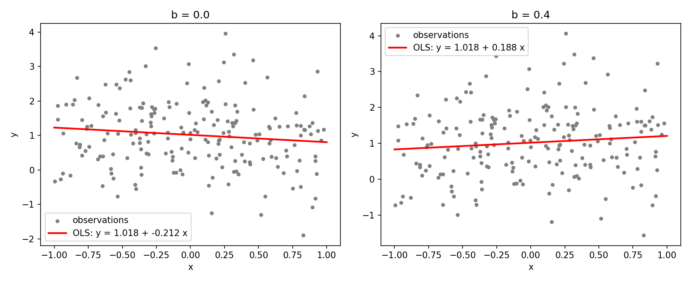
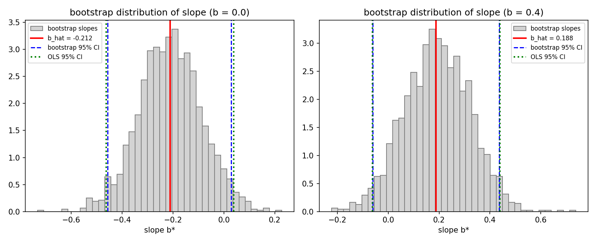
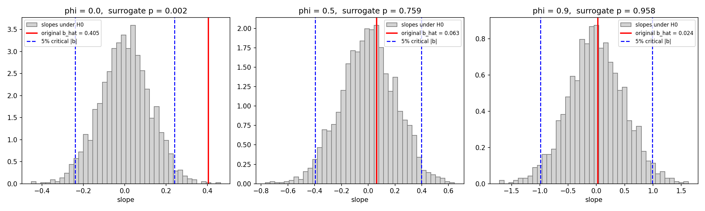
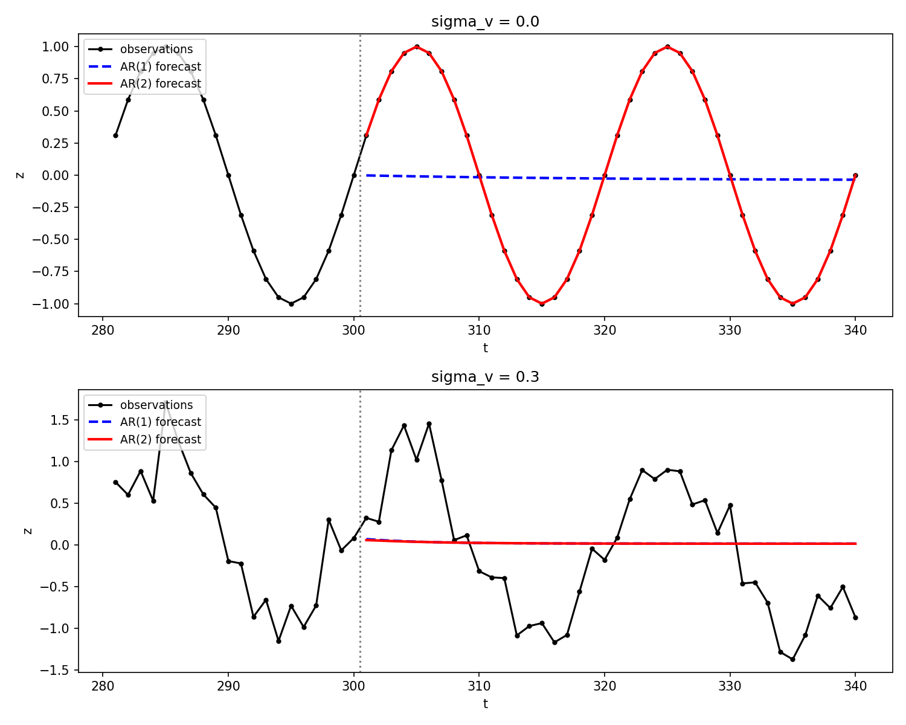

Objective Analysis Week 05 Homework#
Question 1. Bootstrap Confidence Intervals for a Regression Slope#
To investigate the uncertainty of a regression slope, generate \(n = 200\) independent observations from
where \(x_i\) and \(\epsilon_i\) are independent. Consider two cases: \(b = 0\) and \(b = 0.4\). Here, \(\mathcal{N}(\mu, \sigma^2)\) denotes a normal distribution with mean \(\mu\) and variance \(\sigma^2\). Use a fixed random seed and report it.
(a) Regression Estimation
Estimate the intercept and slope using ordinary least squares (OLS).
Plot the observations and the fitted regression line for each value of \(b\).
(b) Bootstrap Resampling
Perform a pairs bootstrap with \(B = 2000\) replicates. In each replicate, sample \(n\) indices with replacement and select the corresponding pairs \((x_i, y_i)\) using the same indices.
Refit the regression for each bootstrap sample and retain the estimated slope \(\hat b^{*(j)}\), where \(j = 1, \dots, B\). Plot the bootstrap distribution of the estimated slope.
(c) Confidence Intervals
Calculate the 95% percentile bootstrap confidence interval:
\[\left[ q_{0.025}(\hat b^*),\ q_{0.975}(\hat b^*) \right]\]where \(q_p\) denotes the empirical \(p\)-quantile. Compare this interval with the conventional 95% OLS confidence interval:
\[\hat b \pm t_{0.975, n-2}\, \mathrm{SE}_{\mathrm{OLS}}(\hat b)\]
(d) Interpretation and Resampling Assumptions
Explain why independently resampling the \(x_i\) and \(y_i\) values is inappropriate for this analysis.
Does the ordinary bootstrap slope distribution directly represent the null distribution under \(H_0: b = 0\)? Explain the distinction between estimating sampling uncertainty and constructing a null distribution.
中文翻譯#
問題 1：迴歸斜率的 Bootstrap 信賴區間
為了研究迴歸斜率的不確定性，由下式產生 \(n = 200\) 筆獨立觀測：
\[y_i = 1 + b x_i + \epsilon_i, \qquad x_i \sim U[-1, 1], \qquad \epsilon_i \sim \mathcal{N}(0, 1)\]其中 \(x_i\) 與 \(\epsilon_i\) 彼此獨立。考慮兩種情況：\(b = 0\) 與 \(b = 0.4\)。此處 \(\mathcal{N}(\mu, \sigma^2)\) 表示平均為 \(\mu\)、變異數為 \(\sigma^2\) 的常態分布。請使用固定的亂數種子並回報其數值。
(a) 迴歸估計
以普通最小平方法（OLS）估計截距與斜率。
對每一個 \(b\) 值，畫出觀測資料與擬合的迴歸直線。
(b) Bootstrap 重抽樣
進行 \(B = 2000\) 次的成對 bootstrap（pairs bootstrap）。每次重抽時，有放回地抽出 \(n\) 個索引，並用同一組索引選出對應的資料對 \((x_i, y_i)\)。
對每一組 bootstrap 樣本重新擬合迴歸，保留估計的斜率 \(\hat b^{*(j)}\)，\(j = 1, \dots, B\)。畫出估計斜率的 bootstrap 分布。
(c) 信賴區間
計算 95% 百分位數 bootstrap 信賴區間 \(\left[ q_{0.025}(\hat b^*),\ q_{0.975}(\hat b^*) \right]\)，其中 \(q_p\) 表示經驗 \(p\) 分位數。將此區間與傳統的 95% OLS 信賴區間 \(\hat b \pm t_{0.975, n-2}\, \mathrm{SE}_{\mathrm{OLS}}(\hat b)\) 比較。
(d) 解讀與重抽樣假設
解釋為什麼在本分析中，將 \(x_i\) 與 \(y_i\) 各自獨立地重抽是不恰當的。
一般的 bootstrap 斜率分布是否直接代表 \(H_0: b = 0\) 下的虛無分布？說明「估計抽樣不確定性」與「建構虛無分布」之間的差別。
Answer 1.#
程式：hw5_q1.py（執行：在 hw5 資料夾輸入 py hw5_q1.py）
基本知識#
1. OLS 斜率與標準誤
殘差變異數除以 \(n-2\)，因為估計了 \(a\)、\(b\) 兩個參數，用掉 2 個自由度；所以信賴區間用 \(t_{n-2}\) 分布。
2. Bootstrap 的想法
我們只有一組樣本，無法重做實驗。Bootstrap 把「手上這組樣本」當成母體，從中有放回地重抽 \(n\) 筆，模擬「再做一次實驗」。重複 \(B\) 次，\(\hat b^*\) 的分布就近似 \(\hat b\) 的抽樣分布：
3. 百分位數信賴區間
把 \(B\) 個 \(\hat b^*\) 排序，取第 2.5% 與 97.5% 的值當作區間端點（np.percentile(b_boot, [2.5, 97.5])）。
(a) 迴歸估計#
亂數種子：SEED = 2026。兩種情況使用同一組 \(x_i\) 與 \(\epsilon_i\)，只有真實斜率 \(b\) 不同。
真實 \(b\) |
\(\hat a\) |
\(\hat b\) |
\(\mathrm{SE}_{\mathrm{OLS}}(\hat b)\) |
|---|---|---|---|
\(0\) |
\(1.0178\) |
\(-0.2116\) |
\(0.1271\) |
\(0.4\) |
\(1.0178\) |
\(0.1884\) |
\(0.1271\) |

因為誤差相同，兩個 \(\hat b\) 剛好差 \(0.4\)。這組誤差恰好讓斜率估計偏低約 \(0.21\)（約 \(1.7\) 個標準誤），屬於正常的隨機波動。
(b) Bootstrap 重抽樣#

真實 \(b\) |
bootstrap \(\hat b^*\) 平均 |
bootstrap \(\hat b^*\) 標準差 |
\(\mathrm{SE}_{\mathrm{OLS}}\) |
|---|---|---|---|
\(0\) |
\(-0.2115\) |
\(0.1234\) |
\(0.1271\) |
\(0.4\) |
\(0.1917\) |
\(0.1283\) |
\(0.1271\) |
bootstrap 分布的中心在 \(\hat b\)（而不是真值 \(b\)），形狀接近常態，標準差與 \(\mathrm{SE}_{\mathrm{OLS}}\) 幾乎一樣。
(c) 信賴區間#
\(t_{0.975,\,198} = 1.9720\)
真實 \(b\) |
95% bootstrap CI |
寬度 |
95% OLS CI |
寬度 |
|---|---|---|---|---|
\(0\) |
\([-0.4572,\ 0.0292]\) |
\(0.4863\) |
\([-0.4623,\ 0.0391]\) |
\(0.5014\) |
\(0.4\) |
\([-0.0600,\ 0.4356]\) |
\(0.4956\) |
\([-0.0623,\ 0.4391]\) |
\(0.5014\) |
兩種區間非常接近。原因是本題資料完全符合 OLS 的假設（誤差獨立、同變異數、常態），此時 bootstrap 與理論公式應該給出相同的答案。bootstrap 略窄一點，來自有限 \(B\) 的蒙地卡羅誤差，以及 bootstrap 沒有做 \(n-2\) 與 \(t\) 分布的小樣本修正。
若 OLS 假設不成立（例如誤差異質變異、非常態），pairs bootstrap 不依賴這些假設，會比公式更可靠。
\(b = 0\)：兩個區間都包含 0，不拒絕 \(H_0\)，結論正確。
\(b = 0.4\)：兩個區間都包含真值 \(0.4\)，但也包含 0，所以在 5% 水準下無法拒絕 \(b = 0\)。這是一次第二類錯誤（真的有斜率但沒偵測到）：這組誤差使 \(\hat b\) 偏低，而 \(n = 200\) 時 \(0.4\) 只有約 \(3\) 個標準誤大，偵測並非百分之百。
(d) 解讀與重抽樣假設#
為什麼不能把 \(x_i\) 與 \(y_i\) 各自獨立地重抽？
我們要估計的斜率，正是 \(x\) 與 \(y\) 之間的關係，而這個關係只存在於「成對」的 \((x_i, y_i)\) 中。
若 \(x\) 與 \(y\) 各自用不同的索引重抽，重抽後的 \(x^*\) 與 \(y^*\) 彼此獨立，原本的配對關係被打散，斜率會集中在 0 附近，不論真實的 \(b\) 是多少。
這樣得到的分布描述的是「\(x\) 與 \(y\) 無關」時的斜率，而不是 \(\hat b\) 的抽樣不確定性，所以無法用來建構 \(b\) 的信賴區間。
一般的 bootstrap 斜率分布是否就是 \(H_0: b=0\) 的虛無分布？
不是。pairs bootstrap 保留了資料中的關係，所以分布的中心在 \(\hat b\)，描述的是「估計值 \(\hat b\) 會在真值附近變動多少」，也就是抽樣不確定性，用來建構信賴區間。
虛無分布是「假設 \(H_0\) 為真（\(b = 0\)）時，\(\hat b\) 會怎麼分布」，中心必須在 0，用來計算 p 值。建構時必須強制 \(H_0\) 成立，例如：
用 \(H_0\) 模型產生資料：\(y^* = \hat a_0 + e^*\)，其中 \(e^*\) 從 \(H_0\) 下的殘差重抽；
或把 \(y\) 相對 \(x\) 隨機排列（permutation），刻意打散配對。上面那種「各自獨立重抽」其實就類似於在建構虛無分布。
或把 bootstrap 分布平移：\(\hat b^* - \hat b\) 的分布近似 \(H_0\) 下 \(\hat b\) 的分布。
兩者的連結：信賴區間與檢定是對偶的。若 95% CI 不包含 0，就等價於在 5% 水準下拒絕 \(H_0\)；但不能直接把 bootstrap 分布中「\(\hat b^* \le 0\) 的比例」當成 p 值。
Question 2. Regression Significance with AR(1) Errors#
Let \(n = 200\) and \(x_t = -1 + 2(t-1)/(n-1)\) for \(t = 1, \dots, n\). Generate
with \(\epsilon_1 \sim \mathcal{N}(0, 1)\) independent of all innovations. Consider \(\phi \in \{0, 0.5, 0.9\}\). The stationary residual variance is one for every \(\phi\). Treat \(\phi\) and the noise variance as known. Test \(H_0: b = 0\) against \(H_1: b \ne 0\) at the 5% level.
(a) Regression Estimation
Fit an OLS regression for each \(\phi\) and report the estimated slope and conventional OLS standard error.
(b) Significance Tests
Apply the conventional OLS \(t\)-test using \(T = \hat b / \mathrm{SE}_{\mathrm{OLS}}(\hat b)\) and a \(t\) distribution with \(n - 2\) degrees of freedom.
For each \(\phi\), generate \(B = 2000\) independent surrogate records under \(H_0\) by replacing 0.4 with zero and retaining the same \(x_t\), AR(1) parameters, and stationary initialization. Please visualize the histogram of regression slope, and locate the regression slope obtained by original OLS method.
中文翻譯#
問題 2：誤差為 AR(1) 時的迴歸顯著性
令 \(n = 200\)，且 \(x_t = -1 + 2(t-1)/(n-1)\)，\(t = 1, \dots, n\)。由下式產生資料：
\[\begin{split}\begin{gather*} > y_t = 1 + 0.4 x_t + \epsilon_t, \\ > \epsilon_t = \phi \epsilon_{t-1} + u_t, \qquad u_t \sim \mathcal{N}(0, 1 - \phi^2), \qquad t = 2, \dots, n, > \end{gather*}\end{split}\]其中 \(\epsilon_1 \sim \mathcal{N}(0, 1)\)，且與所有新息（innovation）獨立。考慮 \(\phi \in \{0, 0.5, 0.9\}\)。對每個 \(\phi\)，穩態殘差變異數皆為 1。將 \(\phi\) 與雜訊變異數視為已知。在 5% 顯著水準下檢定 \(H_0: b = 0\) 對 \(H_1: b \ne 0\)。
(a) 迴歸估計
對每個 \(\phi\) 進行 OLS 迴歸，回報估計的斜率與傳統 OLS 標準誤。
(b) 顯著性檢定
使用 \(T = \hat b / \mathrm{SE}_{\mathrm{OLS}}(\hat b)\) 與自由度 \(n - 2\) 的 \(t\) 分布，進行傳統 OLS \(t\) 檢定。
對每個 \(\phi\)，將 0.4 換成 0，並保留相同的 \(x_t\)、AR(1) 參數與穩態初始化，在 \(H_0\) 下產生 \(B = 2000\) 筆獨立的替代資料（surrogate records）。畫出迴歸斜率的直方圖，並標出原始 OLS 方法所得到的迴歸斜率位置。
Answer 2.#
程式：hw5_q2.py（執行：在 hw5 資料夾輸入 py hw5_q2.py）
基本知識#
1. AR(1) 誤差
\(\epsilon_t = \phi\epsilon_{t-1} + u_t\)：今天的誤差會「記得」昨天的誤差。
穩態變異數：\(\mathrm{Var}(\epsilon) = \dfrac{\mathrm{Var}(u)}{1 - \phi^2} = \dfrac{1-\phi^2}{1-\phi^2} = 1\)，所以題目讓三種 \(\phi\) 的雜訊大小相同，只有「記憶」不同。\(\epsilon_1 \sim \mathcal N(0,1)\) 就是從穩態開始。
自相關：\(\mathrm{Corr}(\epsilon_t, \epsilon_{t+k}) = \phi^k\)。\(\phi = 0.9\) 時誤差變化很慢，看起來像緩慢的起伏或趨勢。
2. 傳統 OLS t 檢定的假設
\(\mathrm{SE}_{\mathrm{OLS}}\) 的公式假設誤差彼此獨立。正相關的誤差使「有效樣本數」變小：
但 OLS 仍然以為有 200 筆獨立資料，所以標準誤被低估，\(T\) 被高估，容易誤判為顯著。
3. 替代資料（surrogate）檢定
因為 \(\phi\) 與雜訊變異數已知，可以直接在 \(H_0\)（\(b = 0\)）下模擬很多組資料，得到 \(\hat b\) 的真實虛無分布，不需要依賴「誤差獨立」的假設：
(a) 迴歸估計#
亂數種子：SEED = 2026
\(\phi\) |
\(\hat b\) |
\(\mathrm{SE}_{\mathrm{OLS}}(\hat b)\) |
|---|---|---|
\(0\) |
\(0.4046\) |
\(0.1337\) |
\(0.5\) |
\(0.0627\) |
\(0.1223\) |
\(0.9\) |
\(0.0236\) |
\(0.0886\) |
(b) 顯著性檢定#
\(t_{0.975,\,198} = 1.9720\)
\(\phi\) |
\(T\) |
OLS p 值 |
OLS 結論 |
替代資料 p 值 |
替代資料結論 |
|---|---|---|---|---|---|
\(0\) |
\(3.027\) |
\(0.0028\) |
拒絕 \(H_0\) |
\(0.0020\) |
拒絕 \(H_0\) |
\(0.5\) |
\(0.513\) |
\(0.609\) |
不拒絕 |
\(0.759\) |
不拒絕 |
\(0.9\) |
\(0.266\) |
\(0.790\) |
不拒絕 |
\(0.958\) |
不拒絕 |
\(H_0\) 下的斜率分布（替代資料）與 OLS 標準誤的比較：
\(\phi\) |
\(H_0\) 下 \(\hat b\) 的真實標準差 |
與 \(\mathrm{SE}_{\mathrm{OLS}}\) 的比值 |
替代資料 5% 臨界值 \(\lvert b \rvert\) |
\(H_0\) 為真時 OLS t 檢定的誤拒絕率 |
|---|---|---|---|---|
\(0\) |
\(0.1221\) |
\(0.91\) |
\(0.240\) |
\(5.1\%\) |
\(0.5\) |
\(0.2074\) |
\(1.70\) |
\(0.397\) |
\(25.8\%\) |
\(0.9\) |
\(0.4946\) |
\(5.58\) |
\(0.988\) |
\(65.6\%\) |

（灰色：\(H_0\) 下 2000 筆替代資料的斜率；紅線：原始資料的 OLS 斜率；藍虛線：替代資料的 5% 雙尾臨界值）
討論：
\(\phi = 0\)：誤差獨立，OLS 的假設成立。替代資料的標準差與 \(\mathrm{SE}_{\mathrm{OLS}}\) 相當，OLS 的誤拒絕率約為應有的 5%。兩種檢定都正確地拒絕 \(H_0\)（\(\hat b = 0.405\) 遠在臨界值 \(0.240\) 之外）。
\(\phi = 0.5, 0.9\)：在這次實現中，雜訊碰巧使 \(\hat b\) 很小，兩種檢定都不拒絕。但重點在上面第二張表：
\(H_0\) 下 \(\hat b\) 的真實分散程度是 \(\mathrm{SE}_{\mathrm{OLS}}\) 的 \(1.7\) 倍與 \(5.6\) 倍，OLS 嚴重低估了不確定性。
結果是：若 \(H_0\) 真的成立，傳統 t 檢定仍會有 \(26\%\)（\(\phi=0.5\)）與 \(66\%\)（\(\phi=0.9\)）的機率宣稱「斜率顯著」，遠高於名目上的 5%。
以 \(\phi = 0.9\) 為例，OLS 認為 \(|\hat b| > 1.972 \times 0.0886 = 0.175\) 就顯著；但替代資料顯示，即使 \(b = 0\)，\(|\hat b|\) 也有 5% 的機會超過 \(0.988\)。真實的訊號 \(b = 0.4\) 甚至小於這個臨界值，幾乎無法被偵測。
原因：正相關的 AR(1) 雜訊變化緩慢，在有限長度的紀錄中很容易形成看起來像趨勢的起伏，所以斜率的變異很大；而 OLS 把 200 個點當成 200 筆獨立資訊（實際上只有約 11 筆），因此過度自信。\(\phi=0.9\) 時，殘差中緩慢的起伏有一部分被當成趨勢吸收掉，使 \(\hat\sigma^2\) 也偏小，\(\mathrm{SE}_{\mathrm{OLS}}\) 又更小了。
結論：誤差有序列相關時，不能直接使用傳統 OLS t 檢定。應改用考慮自相關的方法，例如本題的替代資料（蒙地卡羅）檢定、用有效樣本數修正自由度，或廣義最小平方法（GLS）。
Question 3. AR(1) versus AR(2) for an Oscillatory Signal#
Generate \(n = 400\) observations at integer times \(t = 1, \dots, 400\):
with independent measurement noise. Consider two noise levels, including \(\sigma_v = 0\) and \(0.3\). Use the first 300 observations for training and reserve the rest for testing. Fit the models
(a) The Noise-Free Signal
Derive a second-order recurrence satisfied by the noise-free sinusoid. Explain how it motivates an AR(2) model.
(b) Model Fitting
Fit both models by OLS with an intercept, using the same training response times \(t = 3, \dots, 300\). Report the coefficients and training residual root-mean-square error (RMSE) for each noise level.
(c) Forecast Comparison
Produce a 40-step recursive forecast initialized at \(t = 300\). Retain the training coefficients and use predicted values whenever subsequent lags extend beyond the training period. Plot both forecasts against the observations for \(t = 301, \dots, 340\) and report their RMSE over this interval.
Which model better represents the oscillation for each noise level? Explain why training error alone is insufficient to select a model. Note that the noise-free sinusoid is a deterministic oscillation rather than a stationary AR(2) process driven by white-noise innovations.
中文翻譯#
問題 3：振盪訊號的 AR(1) 與 AR(2) 比較
在整數時間 \(t = 1, \dots, 400\) 產生 \(n = 400\) 筆觀測：
\[z_t = \sin\left(\frac{2\pi t}{20}\right) + v_t, \qquad v_t \sim \mathcal{N}(0, \sigma_v^2)\]其中量測雜訊彼此獨立。考慮兩種雜訊大小：\(\sigma_v = 0\) 與 \(0.3\)。前 300 筆觀測用於訓練，其餘保留作為測試。擬合以下模型：
\[\begin{split}\begin{gather*} > \text{AR(1)}: \quad z_t = c + \phi_1 z_{t-1} + e_t, \\ > \text{AR(2)}: \quad z_t = c + \phi_2 z_{t-2} + e_t. > \end{gather*}\end{split}\]
(a) 無雜訊訊號
推導無雜訊正弦波所滿足的二階遞迴關係。說明它如何引出 AR(2) 模型。
(b) 模型擬合
以含截距的 OLS 擬合兩個模型，兩者使用相同的訓練反應時間 \(t = 3, \dots, 300\)。對每種雜訊大小，回報係數與訓練殘差的均方根誤差（RMSE）。
(c) 預報比較
從 \(t = 300\) 開始進行 40 步的遞迴預報。保留訓練所得的係數，當之後的落後項超出訓練期間時，改用預報值。將兩個模型的預報與 \(t = 301, \dots, 340\) 的觀測畫在一起，並回報此區間的 RMSE。
在各雜訊大小下，哪一個模型較能表現振盪？解釋為什麼只看訓練誤差不足以選擇模型。注意：無雜訊的正弦波是確定性的振盪，而不是由白雜訊新息驅動的穩態 AR(2) 過程。
Answer 3.#
程式：hw5_q3.py（執行：在 hw5 資料夾輸入 py hw5_q3.py）
關於題目中的 AR(2) 式子： PDF 上寫的是 \(z_t = c + \phi_2 z_{t-2} + e_t\)（只有 \(z_{t-2}\) 一項）。但 (a) 要推導的二階遞迴同時需要 \(z_{t-1}\) 與 \(z_{t-2}\)，而且只用 \(z_{t-2}\) 的模型無法產生週期 20 的振盪，所以這裡判斷是漏打了 \(\phi_1 z_{t-1}\)，採用標準的 AR(2)：\(z_t = c + \phi_1 z_{t-1} + \phi_2 z_{t-2} + e_t\)。如果助教確實要求只用 \(z_{t-2}\)，需要另外改程式。
(a) 無雜訊訊號#
令 \(\omega = \dfrac{2\pi}{20} = \dfrac{\pi}{10}\)，\(s_t = \sin(\omega t)\)。由和差化積公式
這正是 AR(2) 的形式：\(c = 0\)，\(\phi_1 = 2\cos\omega = 2\cos(\pi/10) \approx 1.9021\)，\(\phi_2 = -1\)，而且沒有誤差項。
特徵方程 \(r^2 - \phi_1 r - \phi_2 = r^2 - 2\cos\omega\, r + 1 = 0\) 的根是 \(r = e^{\pm i\omega}\)：一對複數根，模為 1，角度 \(\omega\) 對應週期 \(2\pi/\omega = 20\)。複數根才會產生振盪，模為 1 表示振幅不衰減。
AR(1) 只有一個實數根 \(\phi_1\)，只能單調衰減（\(0<\phi_1<1\)）或正負交替（\(\phi_1<0\)，週期 2），不可能產生週期 20 的振盪。因此正弦波需要（至少）兩個落後項，也就是 AR(2)。
(b) 模型擬合#
亂數種子：SEED = 2026。兩個模型都用 \(t = 3, \dots, 300\)（298 筆）當反應變數。
\(\sigma_v\) |
模型 |
\(c\) |
\(\phi_1\) |
\(\phi_2\) |
訓練 RMSE |
|---|---|---|---|---|---|
\(0\) |
AR(1) |
\(-0.0020\) |
\(0.9504\) |
— |
\(0.2178\) |
\(0\) |
AR(2) |
\(0.0000\) |
\(1.9021\) |
\(-1.0000\) |
\(0.0000\) |
\(0.3\) |
AR(1) |
\(0.0026\) |
\(0.8110\) |
— |
\(0.4582\) |
\(0.3\) |
AR(2) |
\(0.0022\) |
\(0.7417\) |
\(0.0853\) |
\(0.4566\) |
\(\sigma_v = 0\)：AR(2) 完全找回 (a) 的理論係數，殘差為 0；特徵根 \(0.9511 \pm 0.309i = e^{\pm i\pi/10}\)，模為 1。AR(1) 的 \(\phi_1 \approx \cos\omega = 0.951\)（相鄰兩點的相關係數）。
\(\sigma_v = 0.3\)：AR(2) 的係數與理論值差很多，特徵根變成兩個實數根 \(0.843\) 與 \(-0.101\)，已經不會振盪了，幾乎退化成 AR(1)。
(c) 預報比較#
從 \(t = 300\) 開始遞迴預報 40 步（\(t = 301, \dots, 340\)）：
\(\sigma_v\) |
AR(1) 預報 RMSE |
AR(2) 預報 RMSE |
|---|---|---|
\(0\) |
\(0.7037\) |
\(0.0000\) |
\(0.3\) |
\(0.7917\) |
\(0.7922\) |

哪個模型較能表現振盪？
\(\sigma_v = 0\)：AR(2) 完全勝出。它的預報與觀測完全重合（RMSE \(= 0\)），完美延續週期 20 的振盪。AR(1) 的預報從 \(z_{300} = 0\) 開始，平平地往平均值衰減，完全沒有振盪；RMSE \(0.70 \approx 1/\sqrt2\)，正好等於正弦波本身的 RMS，等於毫無預報能力。
\(\sigma_v = 0.3\)：在這次實現中，兩個模型都沒有表現出振盪。兩條預報都很快衰減到平均值，RMSE 幾乎相同（約 \(0.79\)），與單純預報 0 差不多。理想的模型（知道正弦波）預報誤差應該只剩量測雜訊約 \(0.3\)。
原因是量測雜訊 \(v_t\) 也出現在右邊的落後項 \(z_{t-1}\)、\(z_{t-2}\) 中（解釋變數有誤差），OLS 係數因此被系統性地往 0 拉（regression dilution，迴歸稀釋）。帶雜訊的觀測 \(z_t = s_t + v_t\) 其實是 ARMA(2,2)，不是 AR(2)，所以用 AR(2) 擬合抓不到振盪結構。
就模型結構而言，AR(2) 仍然是唯一有能力表示振盪的模型；但需要更多落後項、ARMA 模型，或直接擬合正弦函數，才能從雜訊中找回振盪。
為什麼只看訓練誤差不足以選擇模型？
訓練 RMSE 衡量的是「一步預報」，而且每一步都使用真實的落後觀測值；它沒有檢驗模型能否自己延續訊號的動力結構。\(\sigma_v = 0\) 時 AR(1) 的訓練 RMSE 只有 \(0.22\)，看起來還不錯，但 40 步預報完全失敗（\(0.70\)）。
參數較多的模型（AR(2) 包含 AR(1)）的訓練誤差一定小於等於較簡單的模型，即使多出的參數只是在擬合雜訊（過度擬合）。\(\sigma_v = 0.3\) 時 AR(2) 的訓練 RMSE 只小了 \(0.0016\)，預報卻沒有比較好。
所以必須用模型沒看過的測試資料（out-of-sample）、多步預報，或懲罰參數數量的準則（AIC、BIC）來選擇模型。
確定性振盪 vs. 穩態 AR(2)：
穩態 AR(2) 的特徵根必須在單位圓內（模 \(< 1\)），由白雜訊新息持續驅動；沒有新息時，振盪會衰減到平均值。
無雜訊的正弦波，特徵根剛好在單位圓上（模 \(= 1\)），而且沒有任何新息（殘差 \(= 0\)）。它是一個確定性的遞迴關係，不是穩態隨機過程；AR(2) 迴歸只是剛好能精確表示這個遞迴，所以預報誤差為 0。
加入量測雜訊後，雜訊是加在觀測上，而不是像 AR 模型那樣作為新息驅動系統，這也是 AR(2) 在 \(\sigma_v = 0.3\) 時失效的原因。